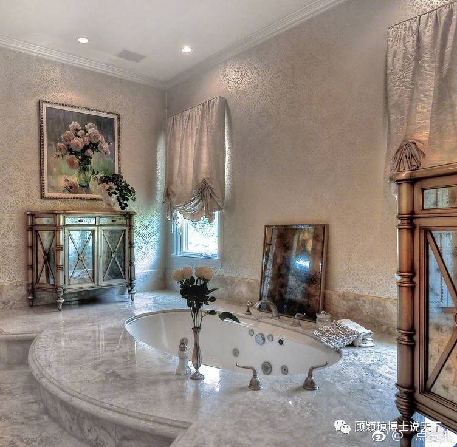
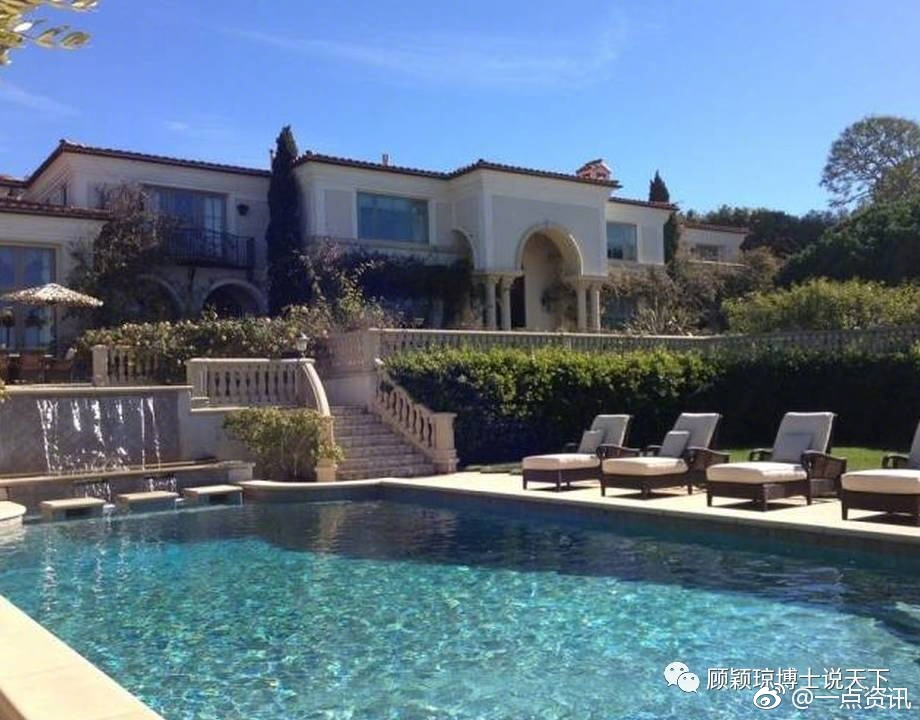

《权力的游戏》里的Lennister家和Stark家之争是不是灵感来源于英国玫瑰战争里的Lancester家和York家？

斯图亚特9
2017-07-15

斯图亚特9
2017-07-15
我发现我的微博里，问号结尾的比非问号结尾的，互动多很多。是不是大家其实都不喜欢我的微博，但是比较热心帮我解答问题？
斯图亚特9
2017-07-15
//@刘知远THU: //@frankyym9://@破破的桥:我一家8口人，现在住的房子就是一个不到200平米的房子，我希望把所有的资金，精力投入到乐视生态的事业中。——贾跃亭 2016年11月9日《我是世界最穷CEO》
//@frankyym9://@破破的桥:我一家8口人，现在住的房子就是一个不到200平米的房子，我希望把所有的资金，精力投入到乐视生态的事业中。——贾跃亭 2016年11月9日《我是世界最穷CEO》 贾跃亭：我是世界最穷CEO 8口人住不到200平米房子
贾跃亭：我是世界最穷CEO 8口人住不到200平米房子
@一点资讯:
【带你走进贾跃亭在美国的家 喷泉泳池，极尽奢华】贾跃亭把他在美国的家安在了在洛杉矶南部一个风景秀丽的海边小镇，常年温度稳定在20多度。这处房产目前市场估价八百五十万美金，这是一栋意大利风格的海边别墅，居住面积大概是700平方米，拥有两英亩的园地，有六个卧室，七个洗手间，还有自己的游泳池和疗养中心。这个房子是2014年8月29 日被加州的一个公司用七百万美金购买的。这个公司叫Ocean View Drive INC。成立于2014年8月26日，公司的唯一控股人正是贾跃亭，公司成立只是为了买这处房子，主要是可以规避风险，达到债务隔离的目的。这就是贾跃亭在美国的家：喷泉泳池 极尽奢华
- 
- 